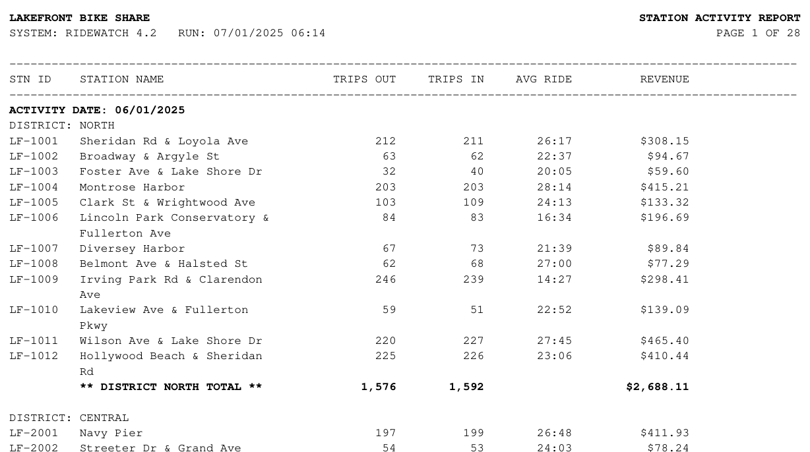

02 · Data engineering
Report Ingestion Pipeline
A Python pipeline that pulls data out of PDF and fixed-width text reports, validates it against the report's own subtotals, and loads it into SQL Server with a full audit trail. Every line in every file is accounted for, and anything that can't be loaded gets logged along with the reason why.
- 157,123
- NOAA weather readings parsed
- 86
- PDF pages turned into 3,306 rows
- 46
- rejects, each with a reason
- ~15 s
- full load, safe to re-run
Source data
The pipeline handles two types of files that tend to give standard import tools trouble:
- Fixed-width text (real data): NOAA's daily weather files for Chicago O'Hare (going back to 1958) and Midway (back to 1997). Each line holds a month of readings for one measurement, packed into 31 eight-character slots, with NOAA's quality flags mixed in.
- PDF reports (fictional company): monthly station activity reports from a made-up bike share system, formatted like the line-printer reports that older systems still email out. I wrote a generator to reproduce the kinds of problems real legacy reports have, then built the parser to handle them.

How it works
- ParseEvery source line becomes a row, a reported total, a known layout line, or a reject.
- ValidateRemove reprinted rows, then reconcile parsed totals against the report's own subtotals.
- StageOpen an audit batch, then bulk-insert rows, rejects, and check results.
- LoadOne stored procedure per source converts units and replaces exactly the rows the batch covers.
- AuditThe batch records lines read, rows loaded, rejects, failed checks, and status.
Problems in the PDF reports
| In the report | How the pipeline handles it |
|---|---|
| Headers and footers on every page | Recognized and skipped, without ending a row whose station name continues after them. |
| Station names wrapped onto a second line | Each row stays open until the next line shows whether the name continues. |
| Subtotals mixed in with data | Kept separately and used to reconcile the parsed rows. |
$1,203.50, (12.00), 26:17, N/A | Parsed with strict formats; anything unexpected is rejected rather than guessed. |
OCR-style typos like 2O8 (a letter O where a zero belongs) | Rejected with the column name and the bad value. |
| A row reprinted on the next page | Caught as a duplicate, with a pointer to the original line. |
There's no actual table structure in these PDFs to extract, so the parser reads every word along with its position on the page, then matches each word to a column based on where that page's column headers sit:
def numeric_column(self, word: Word) -> str:
"""Right-aligned values belong to the header whose right edge they line up with."""
edges = {
"trips_out": self.trips_out_x1,
"trips_in": self.trips_in_x1,
"avg_ride": self.avg_ride_x1,
"revenue": self.revenue_x1,
}
return min(edges, key=lambda col: abs(edges[col] - word.x1))Reconciling against the report's subtotals
Every district and day subtotal printed in the report gets compared to the sum of the rows that were actually parsed. When they don't match, the difference points straight to the rejected row that caused it, and the size of the gap matches that row's values:
2025-06-15 DISTRICT SOUTH trips_in reported 2,056 parsed 1,848 gap 208
-> LF-3003 on 2025-06-15: trips_in: '2O8' is not a whole numberAcross three months of reports, the only reconciliation failures were the 6 day/district combinations that lost a row to a typo. The 3 reprinted rows didn't affect the totals, since duplicates are removed before the comparison happens.
Putting the weather data to use
With almost 70 years of O'Hare weather loaded and converted to standard units, one query shows how often Chicago hits 90°F. It isn't a steady climb (1988's 47 days is still the record), but the 2020s so far have the highest average of any decade.
*2020–2025, six complete years. Source: NOAA GHCN-Daily, station USW00094846.
Design decisions
- Reject instead of repair.
2O8(with a letter O) is almost certainly 208, but a pipeline that guesses will eventually guess wrong, and nobody will notice when it does. Rejected rows are easy to review, and the reconciliation shows exactly what each one cost. - Stage the raw values, convert in SQL. NOAA values come in tenths of a millimeter and tenths of a degree Celsius. The unit conversions and the long-to-wide pivot all happen in one set-based procedure, so they're documented in one place.
- One transaction per load, with
XACT_ABORT ON. If a load fails, the warehouse is left exactly as it was, and the audit row records what was attempted and why it failed. - Safe to re-run. Each batch replaces only the rows it covers, so loading everything a second time leaves the same 35,580 weather days and 3,306 station-days.
- Consistent SQL. All of the T-SQL follows my style guide.
About the data
Weather data is from NOAA NCEI's Global Historical Climatology Network – Daily, a U.S. government work in the public domain. Lakefront Bike Share is fictional. Its ridership is simulated from the real O'Hare weather for each day, so any rain-versus-ridership pattern in the joined data reflects the simulation, not a finding.